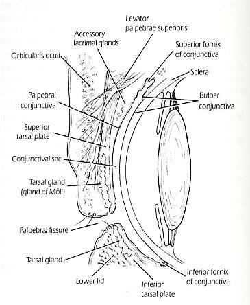

Part I · Gross anatomy
Gross anatomy of the eyelid margin
- It is the free margin of the lid and is 2–3 mm in width.
- The lacrimal papilla with the punctum on its top divides the eyelid margin into two parts:
1) Lacrimal part
- Medial 1/6th
- From the punctum to the medial canthus
- No cilia, no tarsal glands; contains the lacrimal canaliculus
2) Ciliary part
- Lateral 5/6th
- From the punctum to the lateral canthus
- Formed of four zones, described opposite
